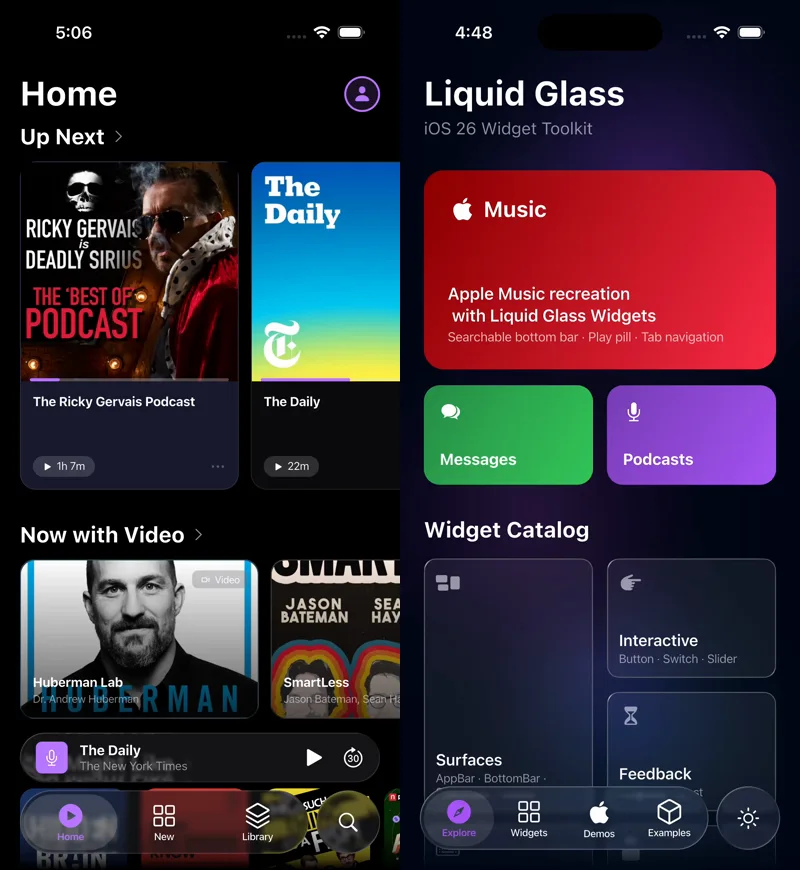

画面の滑らかさの裏側：DevToolsから考えるFlutterアプリのバッテリー消費と最適化
Behind Smooth Scrolling: Evaluating Flutter App Battery Consumption via DevTools
anushka・opheliagame・アン
自己紹介
- インド出身
- flutter engineer 5年目
- teamlab チームラボ 2年目
- creative coding #p5.js
- live coding #hydra #glsl
- モノづくり 木工初心者
画面の滑らかさの裏側：DevToolsから考えるFlutterアプリのバッテリー消費と最適化
Flutter・Liquid Glass・エネルギー

Flutter・Liquid Glass・エネルギー
エネルギーパーフォマンスはどうでしょう
測定結果
- 同じHome画面の20秒を比較
- Liquid Glass: 33.19 J
- 通常表示: 25.79 J
- 測定した電力レールのエネルギーは28.7%増加
エネルギー消費
CPUとGPUの活動時間
テスト結果まとめ
| 指標 | 区間 | 通常表示 | Liquid Glass | 差 |
|---|---|---|---|---|
| 電力レールエネルギー | 20秒 | 25.79 J | 33.19 J | +28.7% |
| アプリCPU実行時間 | 最後の5秒 | 2.265 CPU秒 | 6.576 CPU秒 | +190% |
| GPU活動時間 | 最後の5秒 | 1.691秒 | 2.567秒 | +51.8% |
Canvas::saveLayer開始回数 |
最後の5秒 | 11回 | 3,050回 | +3,039回 |
最後の5秒: エネルギー差 +7.05 J（20秒間の純増分の約95%）
充電中の電力レール測定。アプリ単体の消費電力ではありません。
皆さんに質問
- サクサク動くには何が必要なのか
- サクサク動くだけで良いのか
- 開発者はエネルギー消費の理解は必要なのか
エネルギーの基本
- CPU: アプリの処理や画面の準備
- GPU: 画像の合成や効果の計算
- 使用が長く続くほど、使うエネルギーも増えやすい
- 画面が滑らかかどうかだけでは、使用の量は分からない
BackdropFilterの裏側
BackdropFilterとエネルギー

|
|
これで自分のアプリもプロファイルしたい気分になったのでしょうか
Android Performance Analyzer

Xcode Instruments・Energy Log

Macrobenchmarkを書く
|
|
各反復の結果: 指標のJSON + system trace（.perfetto-trace）
System traceをAIと読み解く
- Macrobenchmarkの各反復から
.perfetto-traceを得る - Android StudioやAndroid Performance Analyzerでtraceを開く
- Android profiler skillに質問し、見る場所やPerfettoSQLを探す
- 提案をtrace上で確認し、原因を決めつけない
android skills add android-profiler
今日のまとめ
- 20秒の電力レール合計: 33.19 J（Liquid Glass）/ 25.79 J（通常表示）
- 差の約95%は最後の5秒。CPU・GPU活動と描画時間も増加
- BackdropFilterの描画仕事は電力に影響があり
- Macrobenchmarkの反復ごとにsystem traceを取得し、分析できる